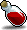

1사냥 전
소비 창이나 기타 창 사진을 올려 주세요
끌어다 놓기 · 클릭해서 고르기 · Ctrl+V
소비 창 → 물약 사용량, 기타 창 → 드랍 아이템 수익 · 퀵슬롯도 함께 올리면 더 정확해요

사냥 손익 계산기사냥 전과 후의 인벤토리 사진을 올리면 물약 사용량과 메소·아이템 수익을 계산해요.
사냥 전·후 개수와 개당 가격은 칸을 눌러 직접 고칠 수 있어요. 고친 칸은 노란색으로 표시되고, 비우면 처음 인식한 값으로 돌아가요. 고친 가격은 다음에도 기억해요.
| 아이템 | 사냥 전 | 사냥 후 | 변화 | 개당 가격 | 금액 |
|---|